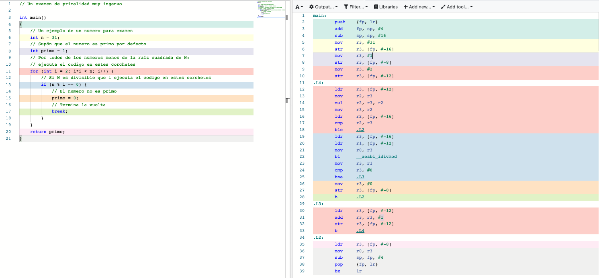

Una mirada rápida a ARM, la tecnología detrás la revolución de teléfonos inteligentes.
Terminología
CPU: unidad central de proceso
ISA: ingeniería de instrucciones
Registro: almacenamiento muy rápido y pequeño en la CPU
I/O: entrada/salida, alias operaciones de archivos.
CISC: computadora de ingeniería de instrucciones complejos
RISC: computadora de ingeniería de instrucciones reducidos
SoC: sistema en un chip
¿Que es ARM? ¿Que es una ISA?
Una ingeniería de instrucciones (o ISA) es uno diseño para una computadora que especificas la norma para el funcionamiento de instrucciones, los registros, operaciones de I/O, usa de memoria, y mas. La ISA mas popular de las computadoras personales es la ingeniería de x86 — Intel inventó esta para el chip de Intel 8086 en 1978, que era muy popular en computadoras de la generación X como el IBM PC-AT y crecía para ser la norma para computadoras personales, servidores, y mas. Para teléfonos, la ISA de ARM (inventado en 1985) es la norma hoy, empezando con la usa de ARM en calculadores y un teléfono de Nokia 6110 en 1994. ARM dominaba el mercado de los teléfonos en las dos décadas pasadas, y es difundiendo al mercado de computadoras personales por los beneficios de la ingeniería de ARM.
El éxito de ARM y CISC frente RISC
Un chip de ARM es una RISC: el chip tiene una pequeña cantidad de instrucciones muy simple y rápido. En comparación, un chip de x86 tiene muchas instrucciones, algunos relativamente complejas y mas lento que instrucciones de ARM. Por ejemplo, vamos a compilar este programa simple de C.
// Un examen de primalidad muy ingenuo int main() { // Un ejemplo de un numero para examen int n = 31; // Supón que el numero es primo por defecto int primo = 1; // Por todos de los numeros menos de la raíz cuadrada de N: // ejecuta el codigo en estes corchetes for (int i = 2; i*i < n; i++) { // Si N es divisible que i ejecuta el codigo en estes corchetes if (n % i == 0) { // El numero no es primo primo = 0; // Termina la vuelta break; } } return primo; }

El programa para ARM usa mas instrucciones simples (con operaciones de registros) y el programa de x86 usa menos instrucciones un poco mas complejo (con operaciones de memoria).
Empezando con tratos con Instrumentos de Texas y Nokia, cada vez más teléfonos usaban ARM para la CPU: porque de la manera simple de las instrucciones, chips de ARM no usamos mucha energía y estamos pequeños. La Nokia era un celular con popularidad extendido con los Milenas y la generación X, y por esto los chips de ARM recibieron un estimulo muy grande. Cuatro años después del trato con Nokia en 1994 ARM convirtió a una compañía publica de NASDAQ. Mientras chips se reducían sus tamaños, ARM expandían al mercado de SoCs después de la milena segundo: la manufactura de sistemas completas en uno solo chip para optimizar la eficacia y rapidez de teléfonos. ARM continuaba a expandir en el mercado en 2005 con una nueva línea de chips llamada “Cortex” que era en los iPhones y iPads de los Milenas, y la tecnología “big.LITTLE” en 2011 para chips heterogéneos que usa unidades de procesa mas grande para tareas mas complicadas. Ahora, ARM tiene mas que 85% de la participación en el mercado de celulares, y mas que 95% para tecnologías llevables.
Los beneficios de la ingeniería de ARM
Chips de ARM estamos muy atractivo para compañías de celulares (y computadoras) para muchas razones. Por ejemplo,
- La ISA de RISC usa menos energía y es mejor para batería.
- Chips de ARM estamos mas pequeños y flexible para uso.
- ARM es mejor para paralelismo (ejecución de muchas instrucciones simultáneamente).
El fondo final es muy importante: porque la reducción de los tamaños de chips es menos viable con el paso de tiempo (es mas difícil), progresos recientes enfocaban en la procesa aumentando la habilidad para ejecutar instrucciones simultáneamente. La habilidad de ARM para apoyar estés progresos con la eficiente, barato, y pequeño diseño es muy prometedor.
El futuro
Recientemente, Apple anunció que computadoras futuras usará a medida chip de ARM — a lo que resalta el mercado en desarrollo de computadoras personales de ARM. Personalmente, creo porque del aumento de machinas paralelos, un futuro donde computadoras personales de ARM es la norma no es muy lejos — la generación alfa será alimentar por ARM. ¿Que piensas? ¿ARM continuará expandir en el mercado de computadoras personales o x86 permanecerá en la cima?